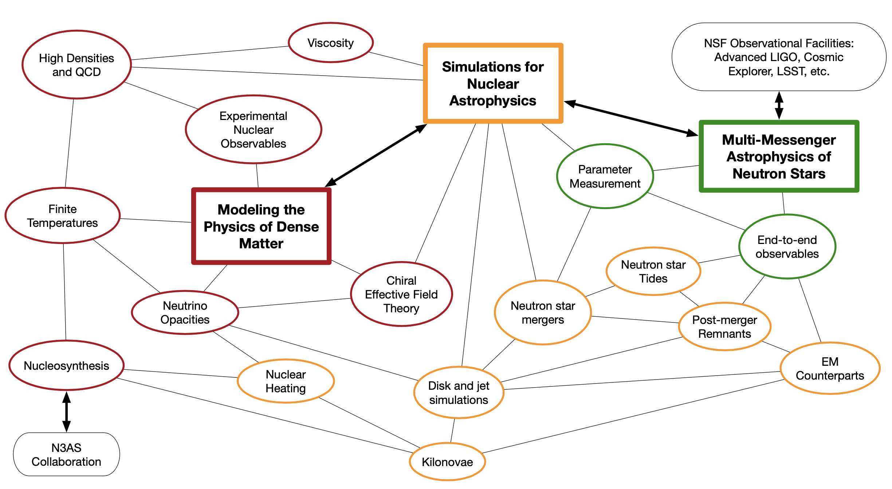

- A Focused Research Hub
- Critical to demonstrate the collaboration adds
value
- Postdocs
- Central to NP3M; most of the funding
- Working Groups
- One mechanism for collaboration
- Mailing lists and slack channel
- Workshops (like this one), Seminars,
Outreach, Education

- How do we connect the fundamental nature of both cold
and hot strongly-interacting matter to multi-messenger
observations of neutron stars?
- What is the nature of matter inside
the core of neutron stars? Can we fully map the
structure of a neutron star from core to crust?
- How do we accurately and fully
simulate the multitude of physical processes in a
neutron star merger and subsequent electromagnetic
counterpart?
- As we observe more astrophysical
sources, how do we map the diversity of multi-messenger
signatures to nuclear theory, beyond placing simple
constraints from the obvious observables?
- How do we make theoretical and
numerical models sufficiently accurate and robust to map
multi-messenger observations to nuclear physics for the
next generation of observational facilities?
- How does quark deconfinement happen as
strongly-interacting matter becomes hotter and denser?
- What is the quantitative impact of
nuclear experiments on our knowledge of the nucleon,
hyperon, and quark interactions needed to describe
neutron stars and their mergers?
- Please acknowledge the NP3M
collaboration in your publications
- Share your codes, your data, and your
expertise
- Form collaborations, especially new
ones which didn't exist before NP3M
- Register on the website, and use the
Document Control Center
- Encourage people to apply
- Encourage them to make sure their proposal is
connected to the science goals of the collaboration
- Encourage them to envision spending
time at more than one NP3M institution, and talk about
that vision in their application
- Purpose
- Coordinate and initiate collaboration
- Prepare for postdocs
- Open to all NP3M scientists
- You may be a member of more than one
working group
- We prefer that all SIs participate in
at least one working group
- Feel free to create other collaboration
mechanisms which are accessible to NP3M scientists
- Update the board quarterly
- Travel funds may be available
- Make NP3M part of the science
conversation
- Leverage other collaborations, create
new partnerships
- Think about ways to leverage NP3M to
get additional funding